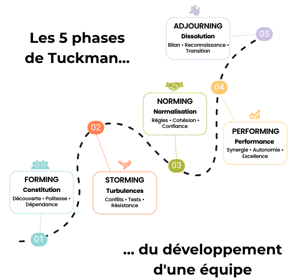
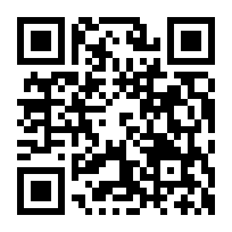

Comment outiller les moniteurices sur l'animation du vivre-ensemble en embarqué ?
Anacoluthe !?
Des outils, des formations, un site web.
Le constat
Très bien outillé
La technique, la nav, la sécurité-matériel. On sait former, transmettre, évaluer.
Laissé à l'intuition
Le facteur humain à bord : coordination, communication, fatigue, tensions. Chaque moniteurice gère à sa façon.
Or ce facteur humain pèse sur les risques.
Coordonner mieux, c'est prévenir
Rôles clairs, briefs et débriefs, désaccords gérés à temps : autant de situations qui dérapent moins.
Un vivre-ensemble un peu plus cadré, c'est moins d'appels RTQ.
L'ADN des Glénans : une école de vie
École de formation à la mer, et, par elle, à la vie collective.
Anacoluthe sert la mission d'éducation populaire des Glénans : Aider les encadrants et les stagiaires à acquérir des savoir-être, à s'émanciper.
Une boîte à outils, pas un programme
🌱 Une greffe sur les routines existantes (brief, nav, débrief), pas une couche en plus.
🧰 À la carte. Lae moniteurice prend ce qui sert son équipage, sa météo, son moment. Aucune carte obligatoire, une seule suffit pour démarrer.
Dans la boîte à outils
👥
4 cartes rôles
tournants, inspirés de marins réels
🌅
7 cartes moments
de l'accueil au débrief final
🃏
4 cartes Joker
pour les accrocs, à la demande
📋
3 affiches
+ leurs mémos
🃏 Les cartes : des mini-guides, une A6 recto-verso chacune.
📋 Les affiches : des A4 plastifiées, à bord des bateaux.
💻 Le tout est aussi consultable sur le web.
Tout équipage traverse 5 phases

D'après le modèle de Tuckman. La turbulence est une étape normale, il faut simplement l'accompagner.
Anacoluthe aide au passage entre les phases
Phase
Ce qui se passe
Ce qui outille
👋 Formation · J1
On prend nos marques
Accueil, accords, découverte des rôles
⚡ Turbulence · J2-J4
Ça frotte (et c'est normal)
Cartes Joker, débrief du soir
🧭 Structuration · J3-J5
Les rôles s'installent
Les 4 rôles, tableau d'équipage
🤝 Coopération · J4-J6
L'équipage se régule seul
Briefs, débriefs, affiches
🏁 Dissolution · J6
On ramène à terre
Débrief final
La vraie question : l'adoption du dispositif
Comment faciliter le fait que les moniteurices s'en saisissent ?
Tout se joue là.
Chaque profil s'en saisit différemment
Profil
Ce qui freine l'adoption
Bénévoles habitué·es
expérience solide, résistance aux nouveaux outils
Permanent·es (BPJEPS)
habitudes (trop) ancrées, automatismes
Stagiaires occasionnel·les
en manque de repères, peu encadré·es
Pigistes de passage
découvrent la base et les outils Glénans
Et le samedi de bascule est déjà saturé : brief, armement, accueil.
Pourquoi ça ne surcharge pas
🌱 ça se greffe sur l'existant
🧰 on pioche, rien d'obligatoire
⚖️ la charge se distribue à l'équipage
📖 un guide autonome : utilisable sans formation
Léger, oui. Mais même léger, ça ne s'adopte pas tout seul.
Le faire adopter : ce qu'on a déjà
📦 le brief samedi matin (kit distribué avec les livres de bord)
📅 la formation vendredi (3 à 4h, optionnelle)
🪧 l'affiche et le guide, pensés pour parler tout seuls
On le sait : c'est loin de suffire.
Ça s'intègre dans VOS outils
Brief samedi matin→kit + guide avec les livres de bord
Discours de 13h→message éduc pop, opportunité relationnelle
Brief matin→+5 min : météo perso, rôles du jour
Débrief soir→+5-10 min : dimension humaine, ancrage
Débrief jeudi (RTQ)→retours d'usage + format mieux conduit
Formation vendredi→atelier "animer le faire-équipage"
Pas un temps à côté : ça vit dans ce qui existe déjà.
Faites vos commandes
Voilà ce que j'ai produit. C'est très, trop étoffé : j'ai testé plein de choses.
Je ne vous demande pas d'adopter mon kit tel quel. Qu'est-ce qu'on peut en garder pour vous,
à intégrer dans vos processus et vos outils actuels ?
Il me reste quelques mois pour produire VOS versions.
À vous
1
Qu'est-ce qui vous rend curieux·euse, que vous auriez envie de tester ?
2
Qu'est-ce qu'on doit bidouiller ensemble pour en faire une version OK pour vous ?
La suite
Quelques mois pour produire les versions que vous aurez choisies, intégrées à vos outils.

anacoluthe.org
Le dispositif complet et l'afficheur de cartes sont en ligne.